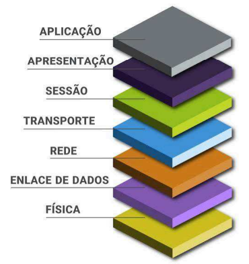

A Camada de Rede é a terceira camada do modelo de referência OSI (Open Systems Interconnection). Sua principal responsabilidade é levar os pacotes de dados da origem até o destino, possivelmente atravessando várias redes intermediárias.
Enquanto a camada de enlace se preocupa em entregar quadros dentro de uma mesma rede local, a camada de rede resolve o problema maior: como sair de uma rede e chegar a outra. É aqui que vivem o endereçamento lógico e o roteamento.
1. Funções Principais
As responsabilidades centrais desta camada são:
- Endereçamento lógico: atribuir endereços (como o IP) que identificam um dispositivo em qualquer rede.
- Roteamento: escolher o melhor caminho que um pacote deve seguir entre a origem e o destino.
- Encaminhamento (forwarding): repassar o pacote de um roteador para o próximo, com base na tabela de rotas.
- Fragmentação: dividir pacotes grandes em pedaços menores quando a rede de destino não suporta o tamanho original.
Protocolo mais conhecido desta camada: o IP (Internet Protocol). Outros exemplos são o ICMP e os protocolos de roteamento.
2. Endereçamento IP
2.1 IPv4
O IPv4 utiliza endereços de 32 bits, o que resulta em aproximadamente 232 endereços possíveis (cerca de 4,3 bilhões). A notação é decimal com pontos, dividida em quatro octetos.
Exemplo de endereço IPv4 e sua estrutura:
IPv4: 192 . 168 . 1 . 10
bits: [8 bits] [8 bits] [8 bits] [8 bits] = 32 bits
2.2 IPv6
O IPv6 foi criado para resolver o esgotamento do IPv4. Ele usa endereços de 128 bits, oferecendo cerca de 2128 endereços — um número gigantesco (aproximadamente 3.4 × 1038). A notação é hexadecimal, separada por dois-pontos.
Exemplo de endereço IPv6:
IPv6: 2001:0db8:85a3:0000:0000:8a2e:0370:7334
[--- 8 grupos de 16 bits cada = 128 bits ---]
3. Comparativo IPv4 x IPv6
| Critério | IPv4 | IPv6 |
|---|---|---|
| Tamanho do endereço | 32 bits | 128 bits |
| Notação | Decimal com pontos | Hexadecimal com dois-pontos |
| Nº aproximado de endereços | 232 (~4,3 bilhões) | 2128 (~3,4 × 1038) |
| Exemplo | 192.168.1.10 | 2001:0db8::7334 |
4. Cabeçalho IPv4
| Versão | Tamanho do cabeçalho | Serviços diferenciados | Tamanho total |
| Identificação | Flags | Deslocamento do fragmento | |
| Tempo de vida | Protocolo | Soma de verificação do cabeçalho | |
| Endereço de origem | |||
| Endereço de destino | |||
| Opções + complemento | |||
5. Etapas Simplificadas do Roteamento
O caminho básico de um pacote sendo roteado pode ser resumido assim:
- O dispositivo de origem monta o pacote com o IP de destino.
- O pacote é enviado ao gateway padrão (o roteador da rede local).
- O roteador consulta sua tabela de rotas e escolhe o próximo salto.
- O pacote é encaminhado de roteador em roteador até a rede de destino.
- O último roteador entrega o pacote ao dispositivo de destino.
6. Material Complementar
6.1. Ilustração do modelo OSI
Figura ilustrativa com as sete camadas do modelo OSI:

6.2. Vídeo explicativo
6.3. Áudio (resumo em podcast)
6.4. Leitura recomendada
Para aprofundar, consulte a documentação da RFC do Protocolo IP.